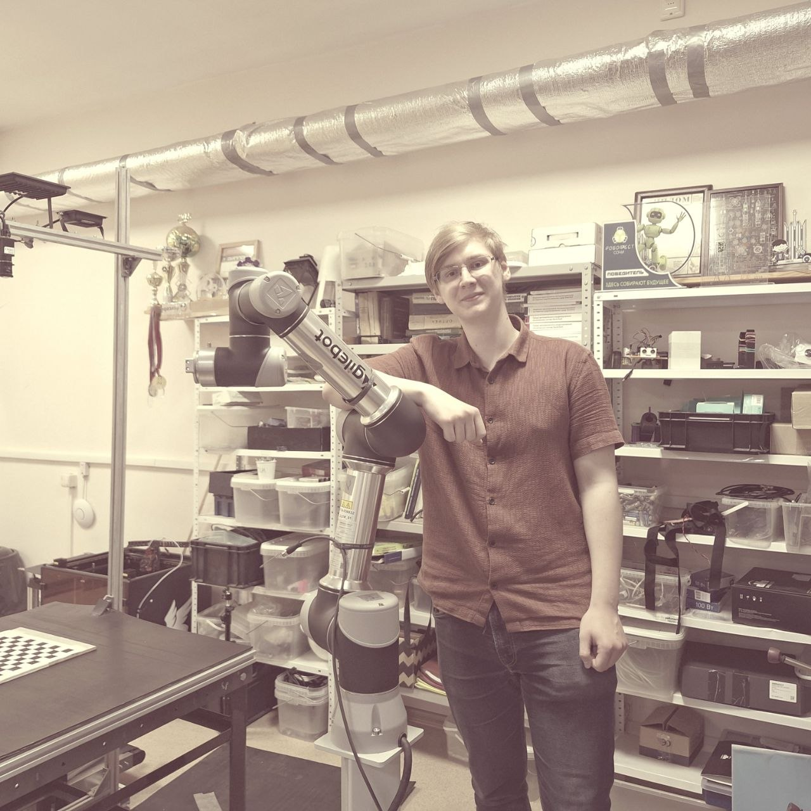

Товарищ! Знакомьтесь с инженером!
Желтухин
Кирилл
Я
Разработчик из Краснодара: бэкенд и ML на Python и Node.js, контейнеризация и аккуратная инженерная практика. Открыт к удалённой, гибридной и очной работе.

Python Node.js ML Docker GitРаздел I — Обо мне
Путь в разработке
Учусь в КубГУ и параллельно развиваюсь в коммерческой и pet-разработке уже около полутора лет: от первых скриптов и учебных задач до сервисов с API, данными и деплоем.
Чем занимаюсь сейчас
Основной стек — Python и Node.js, LLM-агенты, Docker и Git. На GitHub — сервисы, протоколы обмена между агентами, парсеры и боты; на GitLab КубГУ — учебные MVP с CV/ML и RAG.
Кратко о себе
- Образование: Кубанский государственный университет (КубГУ)
- Доп. образование: прохожу сейчас
- Опыт в разработке: около 1,5 года
- Языки: русский — родной; английский — B2
- Формат работы: удалённо, гибрид, очный
- Локация: Краснодар
Раздел II — Навыки
Python / бэкенд
Сервисы по расписанию, парсинг, оркестрация агентов, интеграции с Git и внешними API.
Node.js / сервисы
Лёгкие HTTP-сервисы, маршрутизация и связка фронта с бэкендом при необходимости.
Machine Learning
LLM-агенты в прод-пайплайнах: фильтрация, редактирование, генерация структурированных планов.
Docker / окружение
Compose-стенды, headless Chromium, именованные тома и воспроизводимый деплой на Linux.
Git / процессы
Автокоммиты в смежные репозитории, проверка diff перед push, откат при неудачной выкладке.
Протоколы / безопасность
JSON-кадры, подписки между средами, mTLS и шифрованные контейнеры обмена между агентами.
Раздел III — Проекты
Сервисы и ML
NewsParserAgent
Docker-сервис: Selenium, три роли YandexGPT, публикация карточек на статический сайт через Git с проверкой деплоя.
PostcodeSpace
MVP: процент загрузки грузового отсека по фото, XML API, микросервисы Docker, ML и мониторинг Prometheus/Grafana.
Агенты и протоколы
AgentSystemPrototype
Протокол AIP: .aipkg / .aistorage, четыре контейнера, mTLS и сессионное шифрование.
AgentLinkProto
Протокол подписки 0.1: хаб, три агентные среды, JSON-кадр и темы событий без общих импортов.
PathFinder
Telegram-агент: поиск статей по электромембранным системам (arXiv, Scopus, WoS), карточки и PDF.
ScienceHelper
RAG-бот в Telegram: ответы только по проиндексированному корпусу PDF/MD с указанием страницы.
Парсеры, боты и утилиты
WildberriesParser
Парсер корзины Wildberries на JavaScript.
meme-parser
Telegram-бот: скачивает видео по ссылке из чата и отправляет файл обратно.
ServerDaemonTg
Telegram-бот: мониторинг процессов на сервере и запуск по команде.
spectra-parser
Парсер в составе глобального командного проекта (личный модуль сбора данных).
Repairer
Утилиты для более стабильной работы окружения и типовых сбоев.
Игра и визитка
Раздел IV — Планы
Углубление в ML
Прокачать пайплайны обучения и MLOps на примере PostcodeSpace и агентных сервисов с YandexGPT.
ML: исследования и практика
Углубляю классическое и прикладное ML: подготовка данных, обучение и оценка моделей, перенос обучения и вывод в сервисы — в связке с агентами и CV-проектами из портфолио.
Магистратура в области ИИ
Поступление и обучение в магистратуре по искусственному интеллекту: систематизировать теорию, усилить исследовательскую базу и связать учёбу с pet-проектами и рабочими задачами.
Rust: изучение
Разбираю системное программирование и безопасность памяти: синтаксис, ownership, async и практические мини-проекты для сравнения с привычным Python/Node.js стеком.
Дополнительное образование
Завершить текущие программы доп. обучения и перенести полученные знания в рабочие проекты и портфолио.
Раздел V — Контакты
Нужна связь — используйте каналы ниже.